ECG Blog #534 — Cái gì dẫn truyền và cái gì không dẫn truyền?
Tôi nhận được điện tâm đồ này kèm câu hỏi: "Cái gì dẫn truyền và cái gì không dẫn truyền?" Đáng tiếc là — không có thông tin lâm sàng nào.
CÂU HỎI:
- Đây là nhịp gì?
- Bản ghi này có nhiều dấu hiệu điện tâm đồ thú vị, liên quan cả đến nhịp lẫn điện tâm đồ 12 chuyển đạo. Bạn nhận ra được bao nhiêu dấu hiệu trong số đó?
- Bạn có cần vẽ giản đồ bậc thang (laddergram) để đọc bản ghi này không?
- Có blốc AV hoàn toàn không?

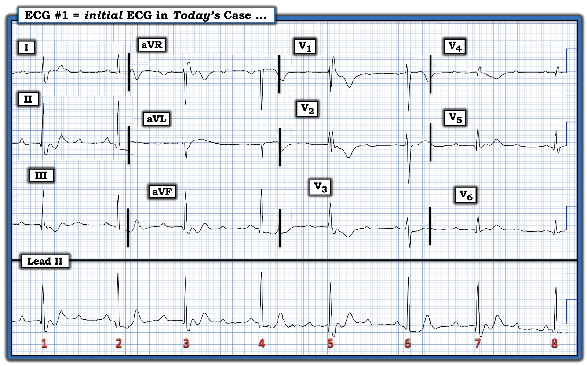
=============================
LƯU Ý: Đây là một điện tâm đồ cực kỳ khó. Dù bạn đã đọc được đến đâu — vẫn có rất nhiều điều để học cho người làm lâm sàng ở mọi mức kinh nghiệm.
- Thú nhận: Nhận định ban đầu của tôi về nhịp đã sai.
- ĐIỂM THEN CHỐT (PEARL) #1: Tôi có thể giải được 90-95% các nhịp phức tạp trong vài giây mà không cần vẽ giản đồ bậc thang. Dù vậy — cần hiểu rằng sẽ luôn có một số nhịp mà ngay cả chuyên gia loạn nhịp cũng có thể không xác định được cơ chế chính xác nếu không có giản đồ bậc thang hỗ trợ. Ca hôm nay là một trong những nhịp như vậy.
- Dù vậy — Bạn không cần giản đồ bậc thang trong ca hôm nay để chẩn đoán một cách tiết kiệm thời gian những điểm thiết yếu cần cho xử trí ban đầu thích hợp. Vì vậy — tôi chia phần bàn luận thành 2 Phần: i) Bàn luận chi tiết về nhiều dấu hiệu thú vị trên điện tâm đồ hôm nay (bao gồm giản đồ bậc thang mà tôi đề xuất để giải thích cơ chế của nhịp); — và, ii) Các bước tôi dùng để đẩy nhanh việc đánh giá một cách tiết kiệm thời gian, đủ để ra quyết định lâm sàng thích hợp.
=============================
Phần 1: Chi tiết về nhiều dấu hiệu thú vị:
Như thường lệ, tôi thích bắt đầu bằng việc đánh giá nhịp — và để đọc nhịp một cách tiết kiệm thời gian tối ưu, tôi ưa dùng cách tiếp cận Ps, Q's, 3R (Xem ECG Blog #185 — để ôn lại Ps, Qs, 3Rs).
- LƯU Ý: Thứ tự đánh giá Ps, Qs và 3Rs không quan trọng. Vì vậy — không phải lúc nào tôi cũng tìm sóng P trước. Thay vào đó — tôi thường bắt đầu với thông số nào dễ đánh giá nhất trong 5 thông số MẤU CHỐT.
- Tập trung vào dải nhịp chuyển đạo II dài ở cuối bản ghi — Ta sẽ nhận ra nhịp không đều (Regular). Nhưng vì chênh lệch giữa các khoảng R-R tương đối nhỏ — có thể dễ nhầm bản ghi này là một nhịp đều. Thực ra, nhịp có tính không đều có quy luật ( = nhịp theo nhóm (group beating) dưới dạng các khoảng R-R dài rồi ngắn xen kẽ nhau).
ĐIỂM THEN CHỐT #2: Dùng compa đo (calipers) là thiết yếu để đọc các nhịp phức tạp như nhịp này. Sự thật đơn giản là chỉ cần luyện tập tối thiểu — việc dùng compa đo sẽ tăng tốc và tăng đáng kể độ chính xác khi bạn đọc.
- Trong Hình 1 — các khoảng R-R dài hơn ( = khoảng R-R giữa các nhát #1-2; 3-4; 5-6; và 7-8) — xen kẽ với các khoảng R-R ngắn hơn ( = khoảng R-R giữa các nhát #2-3; 4-5; và 6-7).
- ĐIỂM THEN CHỐT #3: Trên thực tế — hiện tượng khoảng R-R dài rồi ngắn xen kẽ này lặp lại quá đều đặn trong Hình 1 nên không thể do ngẫu nhiên. Điều này có nghĩa là có nhịp "theo nhóm" — điều luôn phải gợi ý khả năng có một dạng dẫn truyền Wenckebach nào đó (tức là, Có những nguyên nhân khác gây nhịp theo nhóm không do Wenckebach, như nhịp đôi nhĩ với các PAC bị blốc hoặc được dẫn truyền. Dù vậy — trên lâm sàng, thật sự hữu ích khi luôn nghĩ đến dẫn truyền Wenckebach mỗi khi bạn nhận thấy có một kiểu nhát lặp đi lặp lại).
Tiếp tục với Ps, Qs và 3Rs ...
- QRS trong Hình 1 rộng từng lúc. Tùy vào (các) chuyển đạo bạn dùng để đánh giá độ rộng QRS — có thể rất DỄ bỏ sót việc một số phức bộ QRS rộng, trong khi số khác không rộng.
- ĐIỂM THEN CHỐT #4: 12 chuyển đạo tốt hơn một! Việc nhận ra một số phức bộ QRS rộng còn số khác thì không thấy rõ nhất ở chuyển đạo V1 — trong đó nhát #5 (tương ứng với nhát thứ 1 thấy ở chuyển đạo V1) rộng, với hình dạng dẫn truyền kiểu RBBB. Ngược lại — nhát #6 ( = nhát thứ 2 ở chuyển đạo V1) thì hẹp! (Xem Hình 2).
- Khi đã biết nhát #5 trong Hình 2 rộng, còn nhát #6 không rộng — Ta có thể thấy trên dải nhịp chuyển đạo II dài, có sóng S tận ở cuối mỗi phức bộ QRS cách một (tức là, có sóng S tận rộng ở cuối QRS của mỗi nhát mang số lẻ = các nhát #1,3,5 và 7).
- ĐIỂM THEN CHỐT #5: Việc QRS của mỗi nhát mang số chẵn đều hẹp — gợi ý rằng khoảng R-R dài hơn đi trước các nhát #2,4,6,8 đã cho đủ thêm thời gian để nhánh phải hồi phục dẫn truyền (tức là, lý do QRS rộng ra từng lúc là kết quả của một dạng blốc RBBB liên quan tần số).

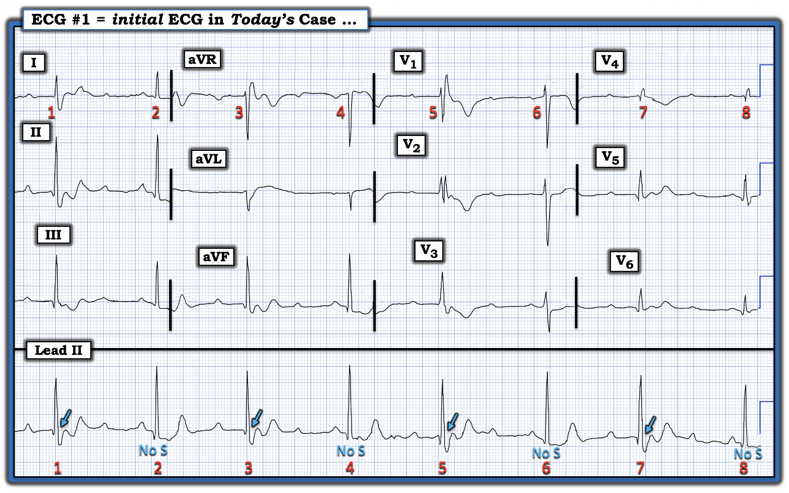
Sóng P có hiện diện!
Tôi đã đánh dấu bằng mũi tên ĐỎ trong Hình 3 để cho thấy có một nhịp nhĩ đều nền.
- Có thể ban đầu bạn đã thấy hoặc chưa thấy sóng P ở tất cả các vị trí tôi đặt mũi tên ĐỎ — vì một số sóng P bị che khuất một phần trong phần cuối QRS hoặc trong sóng T nhọn.
- ĐIỂM THEN CHỐT #6: Dùng compa đo giúp ta xác minh rất nhanh vị trí của tất cả sóng P. Ví dụ — ta chắc chắn thấy sóng P dưới mũi tên ĐỎ thứ 3 và thứ 4 — và nếu đặt compa theo khoảng P-P giữa mũi tên đỏ thứ 3 và thứ 4 này, ta có thể "dò bước" để tìm vị trí các sóng P bị che khuất một phần trong suốt phần còn lại của bản ghi.
- ĐIỂM THEN CHỐT #7: Tôi thấy các bước đơn giản là đánh số các nhát và đánh dấu sóng P (bằng mũi tên) — giúp ích rất nhiều cho bước tiếp theo trong đánh giá nhịp, đó là xác định xem sóng P có liên quan (Related) với các phức bộ QRS kế cận hay không?
- LƯU Ý (Vượt ra ngoài phần cốt lõi): Nếu bạn đo cẩn thận mọi khoảng P-P trong Hình 3 — Bạn có thể đã nhận thấy tần số nhĩ hơi thay đổi. Về mặt kỹ thuật, đây là kết quả của một loạn nhịp xoang theo pha thất (ventriculophasic) nhẹ — một hiện tượng thường gặp trong blốc AV độ 2 và độ 3. Dù vậy, vì mục đích thực hành — Ta có thể nói rằng nhịp nhĩ nền về cơ bản là đều.

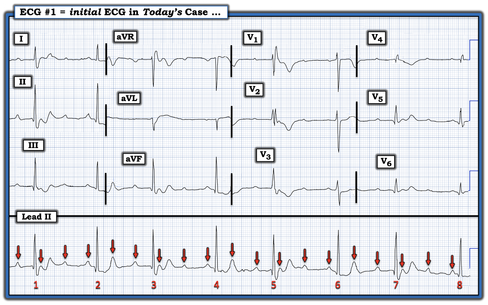
Các sóng P có liên quan (Related) với các phức bộ QRS kế cận không?
Bước MẤU CHỐT để xác định có một dạng blốc AV nào đó hay không — là xác định xem có ít nhất một số sóng P liên quan (Related) với phức bộ QRS kế cận hay không?
- Để làm việc này — tôi quan sát toàn bộ dải nhịp, xem liệu có khoảng PR nào lặp lại không? Một lần nữa — compa đo giúp bước này dễ dàng (và nhanh) hơn rất nhiều, vì compa cho phép ta biết rất nhanh các khoảng PR có thay đổi độ dài hay không.
- Trong Hình 4 — tôi đã thêm các mũi tên HỒNG để làm nổi bật các khoảng PR giống hệt nhau (dù kéo dài) đứng trước các nhát #1,3,5,7.
- ĐIỂM THEN CHỐT #8: Việc ít nhất một số khoảng PR trên bản ghi hôm nay lặp lại cho ta biết rằng ít nhất một số nhát đang được dẫn truyền xuống thất!

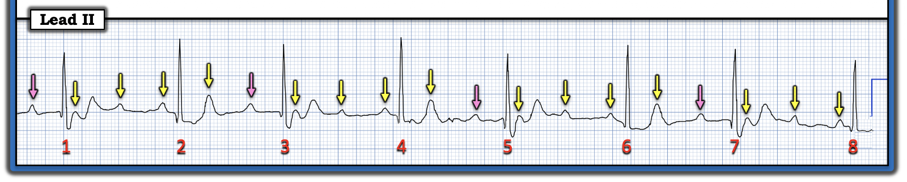
Còn sóng P nào khác được dẫn truyền không?
Đến đây — từ Hình 4 ta biết rằng các nhát #1,3,5,7 đều được dẫn truyền với khoảng PR dài.
- Khi tiếp tục xem các khoảng PR đứng trước những nhát còn lại — sẽ thấy rõ rằng các khoảng PR ngắn hơn được đánh dấu bằng mũi tên ĐỎ trong Hình 5 cũng đều giống hệt nhau (tức là, đều bằng 0.16 giây).
- Điều này cho ta biết rằng mỗi sóng P mũi tên ĐỎ này cũng đều được dẫn truyền xuống thất.

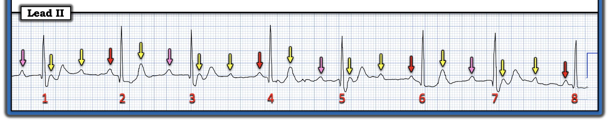
=============================
Phần 2: Tổng hợp lại tất cả ...
Tôi đã tổng hợp trong Hình 6 những gì ta đã phân tích được cho đến lúc này về điện tâm đồ hôm nay.
- Nhịp hôm nay biểu hiện một nhịp thất nhìn chung chậm và không đều. Thay vào đó — có nhịp theo nhóm dưới dạng nhịp không đều một cách đều đặn với các khoảng R-R ngắn rồi dài xen kẽ.
- Có một nhịp nhĩ đều nền ( = các mũi tên màu trong Hình 6).
- Nhiều sóng P trong Hình 6 được dẫn truyền — dù với 2 khoảng PR khác nhau (được đánh dấu bằng các sóng P mũi tên ĐỎ và HỒNG).
- Nhưng rõ ràng có nhiều sóng P hơn phức bộ QRS — kết quả là nhiều sóng P không được dẫn truyền (tức là, các sóng P mũi tên VÀNG trong Hình 6 không được dẫn truyền).
- Ngoài ra, có 4 vị trí trên dải nhịp chuyển đạo dài mà ở đó các sóng P liên tiếp không được dẫn truyền (tức là, cả hai sóng P mũi tên VÀNG liên tiếp thấy giữa các nhát #1-2; 3-4; 5-6; và 7-8 đều không được dẫn truyền).
NHẬN ĐỊNH:
- Có một dạng blốc AV nào đó — vì ta có nhịp nhĩ đều, nhưng không phải tất cả các sóng P đúng lúc đều được dẫn truyền.
- Ta có thể nhận ra ngay rằng nhịp này không phải blốc AV hoàn toàn vì: i) Nhịp thất rõ ràng không đều (trong khi với blốc AV hoàn toàn — thường có nhịp thoát thất đều [hoặc ít nhất là gần như đều]); — và, ii) Việc các sóng P mũi tên ĐỎ và HỒNG được dẫn truyền có nghĩa là không thể có blốc AV "hoàn toàn", vì có dẫn truyền.
- Vì blốc AV không "hoàn toàn" — nhịp này phải là một dạng blốc AV độ 2. Và vì có các sóng P đúng lúc liên tiếp không dẫn truyền được — nhịp hôm nay là một dạng mức độ cao của blốc AV độ 2.
ĐIỂM THEN CHỐT #9: Dù phần bàn luận của tôi cho đến đây khá dài — kết luận quan trọng về lâm sàng (tức là, nhịp hôm nay là một dạng blốc AV độ 2 mức độ cao với nhịp chậm hệ quả) — có thể đạt được nhanh chóng, chỉ đơn giản bằng cách nhận ra những điểm sau:
- Nhịp thất chậm và không đều dưới dạng nhịp theo nhóm.
- Có sóng P đều.
- Một số khoảng PR lặp lại — nghĩa là ít nhất một số sóng P được dẫn truyền. Nhưng nhiều sóng P "đúng lúc" không dẫn truyền được, bao gồm vài chỗ có các sóng P "đúng lúc" liên tiếp không dẫn truyền được.
- Do đó — có một dạng blốc AV độ 2 mức độ cao. Đặc biệt khi có nhịp chậm — có thể cần tạo nhịp nếu nhịp này kéo dài. Trong lúc đó — Ta cần tìm hiểu bệnh sử. Ngoài ra — Ta cần xem kỹ phần còn lại của điện tâm đồ để biết liệu thiếu máu cục bộ/nhồi máu mới xảy ra hoặc đang diễn ra có phải là nguyên nhân có khả năng của blốc AV này không?
=============================
Đây là blốc AV độ 2 loại nào?
Tôi đã ôn lại các blốc AV độ 2 trong nhiều bài trên ECG Blog này (Xem ECG Blog #62 và ECG Blog #465 — có Video ôn tập các khái niệm này trong phần Bổ sung của Blog #465). Tóm lại — blốc AV độ 2 được chia thành dạng Mobitz I và dạng Mobitz II. Những lý do khiến blốc AV hôm nay gần như chắc chắn là một dạng Mobitz I ( = Wenckebach AV) gồm:
- i) Mobitz I phổ biến hơn Mobitz II rất nhiều;
- ii) Như đã thấy ở Hình 2 — phức bộ QRS của các nhát được dẫn truyền thỉnh thoảng hẹp — trong khi với dạng Mobitz II nặng hơn của blốc AV độ 2, QRS hầu như luôn rộng một cách cố định;
- iii) Có nhịp theo nhóm, và như đã nói ở ĐIỂM THEN CHỐT #3 — nhịp theo nhóm đi kèm một nhịp nhĩ đều, trong đó một số nhát được dẫn truyền còn số khác thì không — thường là kết quả của Wenckebach AV ( = Mobitz I).
- iv) Mobitz I rất thường đi kèm nhồi máu cơ tim thành dưới và/hoặc thành sau — nên một điểm nữa ủng hộ Mobitz I sẽ là NẾU điện tâm đồ 12 chuyển đạo gợi ý nhồi máu cơ tim thành dưới và/hoặc thành sau mới xảy ra hoặc đang diễn ra. (Ngược lại — Mobitz II thường đi kèm nhồi máu cơ tim thành trước hơn).
Hãy NHÌN lại điện tâm đồ 12 chuyển đạo hôm nay trong Hình 6.
- Có bằng chứng nhồi máu mới xảy ra hoặc đang diễn ra không?

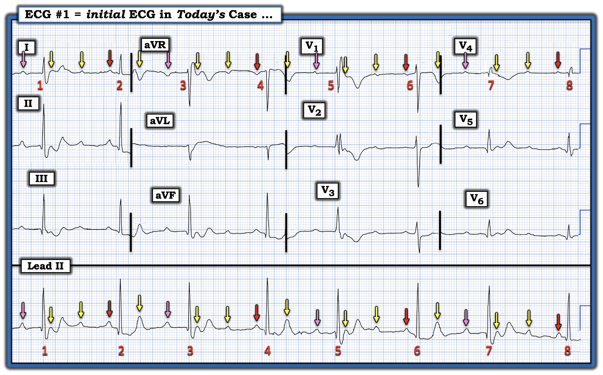
=============================
Có bằng chứng nhồi máu mới xảy ra không?
Như ta đã xác lập trước đó — cả các sóng P mũi tên HỒNG và ĐỎ trên dải nhịp chuyển đạo II dài của Hình 6 đều được dẫn truyền xuống thất, dù với các khoảng PR khác nhau.
- Điều này có nghĩa là nhát #5 ở chuyển đạo V1 của Hình 6 được dẫn truyền xuống thất với RBBB (blốc nhánh phải — Right Bundle Branch Block) — trong khi khoảng R-R đi trước nhát #6 dài hơn đã cho đủ thêm thời gian để dẫn truyền bình thường hồi phục.
- Mặc dù bình thường sẽ thấy ST-T chênh xuống phần nào ở các chuyển đạo trước khi có dẫn truyền kiểu RBBB — mức ST-T chênh xuống ở chuyển đạo V2 (nếu không nói là cả ở chuyển đạo V1 và V3) có vẻ tăng không tương xứng. Điều này gợi ý OMI thành sau mới xảy ra là nguyên nhân có khả năng của rối loạn dẫn truyền Mobitz I.
=============================
Giản đồ bậc thang đề xuất của tôi cho nhịp hôm nay:
Như tôi đã ngụ ý trong phần mở đầu ca hôm nay — nhịp hôm nay phức tạp đến mức tôi cần vẽ giản đồ bậc thang để xác định chính xác cơ chế của rối loạn dẫn truyền này.
- Xin nhấn mạnh (như đã nêu ở ĐIỂM THEN CHỐT #9) — giản đồ bậc thang là không cần thiết để nhanh chóng rút ra kết luận quan trọng về lâm sàng rằng có nhịp chậm với blốc AV độ 2 Mobitz I mức độ cao, nhiều khả năng nhất là do nhồi máu cơ tim thành sau mới xảy ra.
- Dù vậy — tôi thấy việc minh họa bằng giản đồ bậc thang các cơ chế loạn nhịp phức tạp mang lại hiểu biết sâu sắc và hữu ích để hiểu quá trình sinh lý.
- Với bạn đọc muốn học cách vẽ giản đồ bậc thang — tôi trình bày cách làm của mình với hơn 100 ca có minh họa trong ECG Blog #188.
- Xin nhấn mạnh rằng dù cần thời gian và luyện tập để vẽ giản đồ bậc thang thành thạo — chỉ với hướng dẫn tối thiểu, việc hiểu ngay cả những giản đồ bậc thang phức tạp đã được vẽ sẵn cho bạn cũng trở nên DỄ DÀNG. Điều này sẽ trở nên rõ ràng khi tôi giải thích giản đồ bậc thang đề xuất cho ca hôm nay.
=============================
Vì vậy — tôi kết thúc ca hôm nay bằng việc dựng giản đồ bậc thang cho kiểu nhịp theo nhóm mà ta nhận ra trên bản ghi hôm nay.

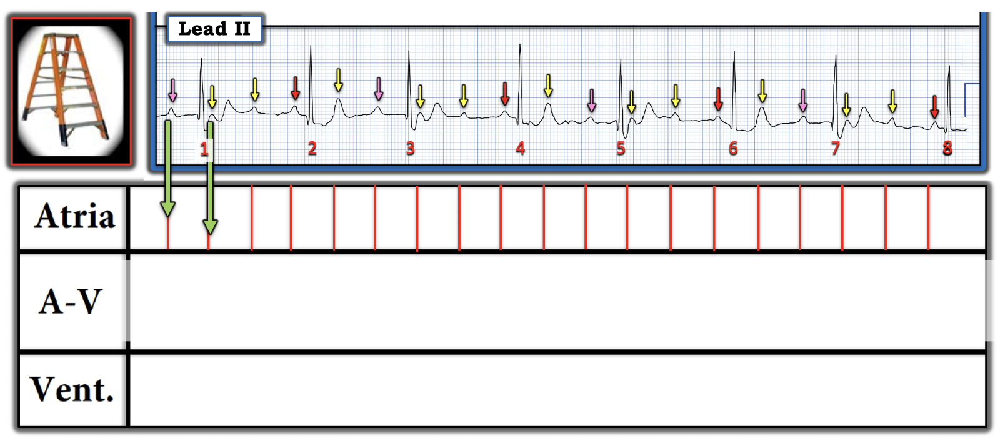

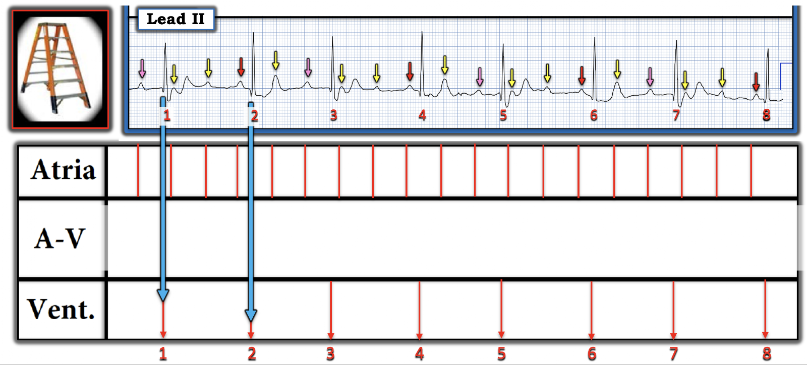
= = = = = = =
Điểm MẤU CHỐT: "Phần DỄ" khi dựng hầu hết các giản đồ bậc thang gồm 2 BƯỚC đầu tiên này (được trình bày ở Hình 7 và 8). Giờ thử thách mới bắt đầu — cố gắng "giải" giản đồ bậc thang bằng cách tìm ra những sóng P nào trong Tầng Nhĩ đang được dẫn truyền xuống thất.
===========================
LƯU Ý (Vượt ra ngoài phần cốt lõi): Vì các sóng P không dẫn truyền liên tiếp xuất hiện ở vài chỗ trên bản ghi hôm nay — tôi đã nghi ngờ có thể có blốc AV hai tầng trong nút AV (Tôi giải thích và minh họa khái niệm nâng cao này trong ECG Blog #463). Chính vì lý do này mà tôi chia Tầng Nút AV thành 2 phần (bằng cách vẽ một đường chấm ngang màu ĐEN trong Hình 9).
===========================

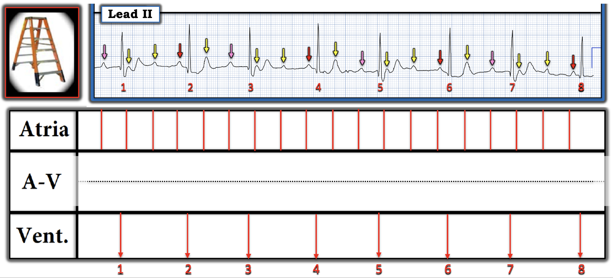

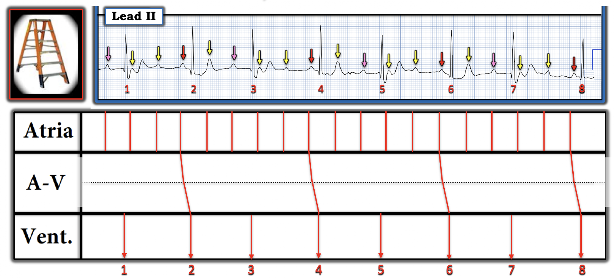

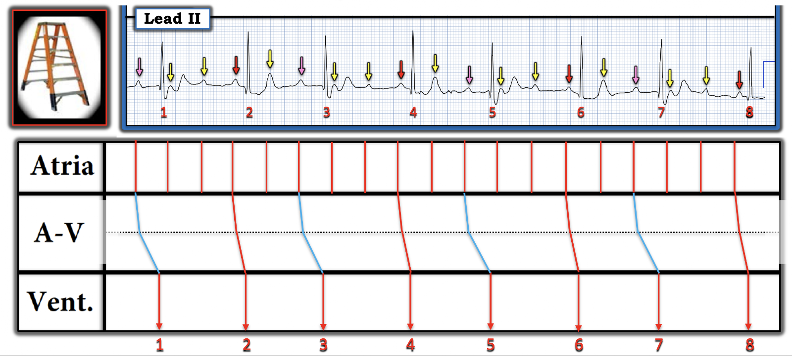

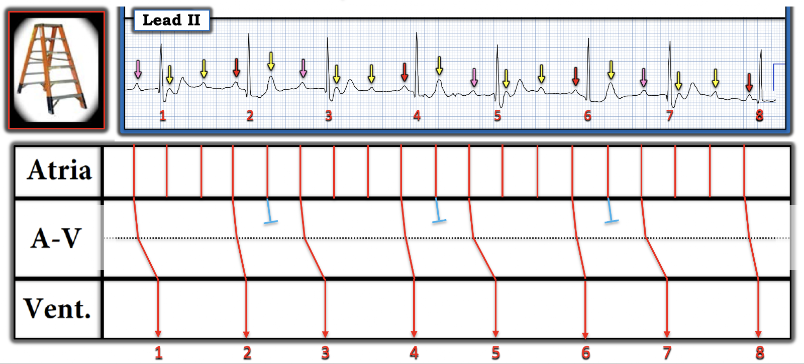
= = = = = = =
Có vẻ hợp lý khi giả định rằng các sóng P mũi tên VÀNG đơn độc xuất hiện trong các khoảng R-R ngắn hơn (tức là, giữa các nhát #2-3; 4-5; 6-7) không đi qua được tầng Nút AV trên (các đầu cụt XANH DƯƠNG mà tôi đã vẽ ở tầng Nút AV trên này).

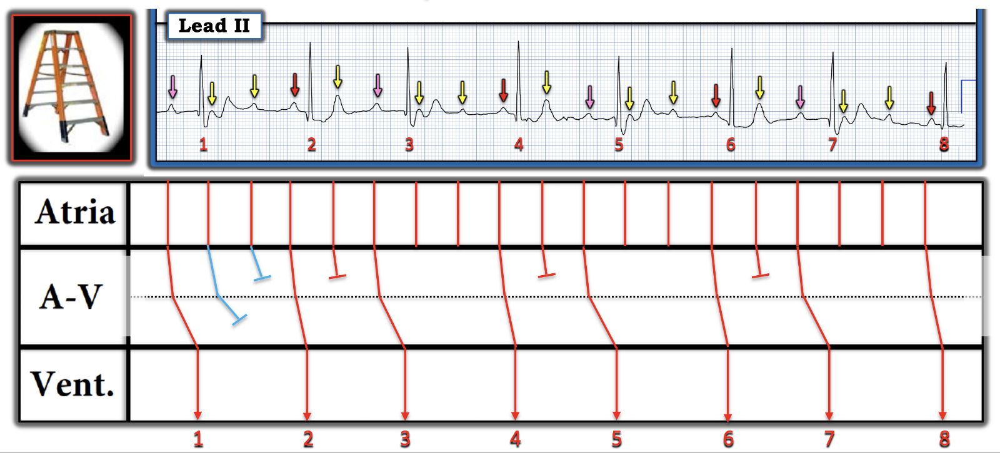
= = = = = = =
LƯU Ý: Đôi khi tôi đơn giản là cần "thử" vài khả năng theo kiểu "thử và sai" — cho đến khi tìm được một khả năng phù hợp. Tôi minh họa quá trình này ở Hình 13 — trong đó tôi giả định dẫn truyền AV 3:2 qua tầng Nút AV trên — rồi dẫn truyền AV 2:1 qua tầng Nút AV dưới (các đường XANH DƯƠNG trong Tầng Nút AV).

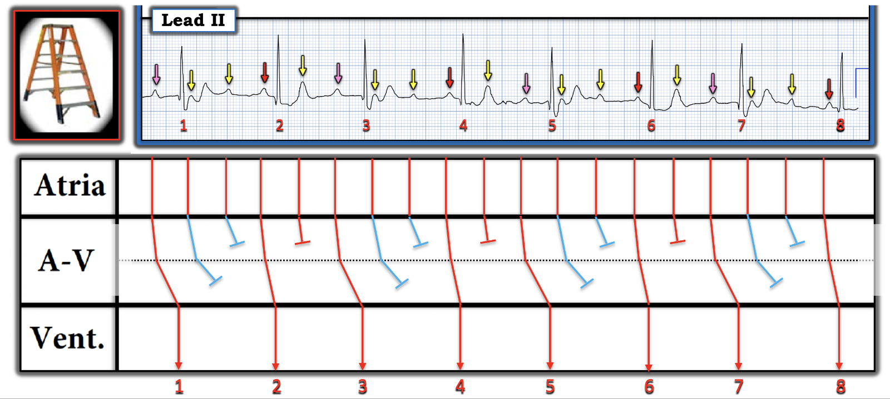

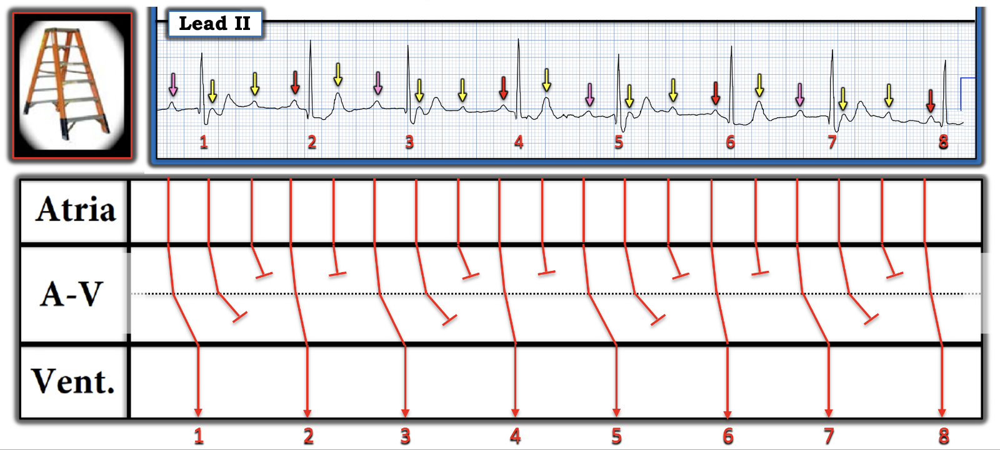
=====================
SUY NGHĨ CUỐI CÙNG:
Như tôi đã suy đoán khi giải thích Hình 6 — tôi nghi ngờ OMI thành sau mới xảy ra là nguyên nhân của rối loạn dẫn truyền hôm nay.
- Một khả năng khác — sóng T đảo ngược tăng không tương xứng ở các chuyển đạo trước trong Hình 6 có thể phản ánh "thủ phạm" là LAD ở một bệnh nhân bị bệnh nhiều nhánh mạch vành, nay đã có một số bằng chứng tái tưới máu tự phát.
- Dù là trường hợp nào, thông tim sớm để xác định giải phẫu, kèm tái tưới máu bằng PCI nếu xác định được động mạch "thủ phạm" — có vẻ là hướng xử trí được ưu tiên.
- "Tin tốt" là nếu PCI tái tưới máu thành công động mạch "thủ phạm" — thì blốc AV mức độ cao cùng nhịp chậm hệ quả (cũng như RBBB liên quan tần số từng lúc) đều có thể hết.
==========================================
Lời cảm ơn: Xin cảm ơn Omar Hassan Seddik (từ thành phố Mansoura, Ai Cập) đã gửi ca bệnh hôm nay cùng các bản ghi này.
==========================================

==========================================
PHẦN BỔ SUNG (20/6/2026):
Những ai thường lui tới các diễn đàn điện tâm đồ quốc tế hẳn sẽ quen với những bình luận định kỳ của David Richley, người nổi tiếng về chuyên môn đọc các loạn nhịp phức tạp. Vì vậy tôi luôn hoan nghênh nhận xét của Dave về những ca phức tạp mà tôi đăng. Anh ấy vừa gửi cho tôi bình luận sau, kèm một giản đồ bậc thang thay thế cho giản đồ của tôi ở Hình 15.
Dave viết như sau:
- Chào Ken. Tôi rất thích điện tâm đồ tuyệt vời anh vừa đăng trên blog và đồng ý với cách giải thích của anh là blốc Wenckebach nút AV hai tầng. Giản đồ bậc thang của anh dường như cho thấy blốc 3:2 xen kẽ với 2:1 ở tầng nút AV trên, với blốc 3:2 ở tầng nút AV dưới.
- Tôi không hiểu được vì sao tỷ lệ dẫn truyền lại luân phiên như vậy ở tầng nút AV trên, nên tôi thử xem có thể đưa ra cách nào đơn giản hơn một chút không. Cách giải thích hơi khác của tôi là có blốc 5:4 ở tầng nút trên — và blốc 2:1 ở tầng nút dưới (Xem Hình 16 bên dưới để xem giản đồ bậc thang thay thế của Dave).
- Tôi nhận thấy rằng điều này hoàn toàn là suy đoán và không thể chứng minh — và rất có thể còn những kiểu dẫn truyền khác về lý thuyết cũng giải thích được điện tâm đồ này. Ngoài ra, dĩ nhiên, điều này không có ý nghĩa lâm sàng — nhưng tôi nghĩ anh có thể quan tâm đến biến thể nhỏ này của cách giải thích xuất sắc của anh — Dave.

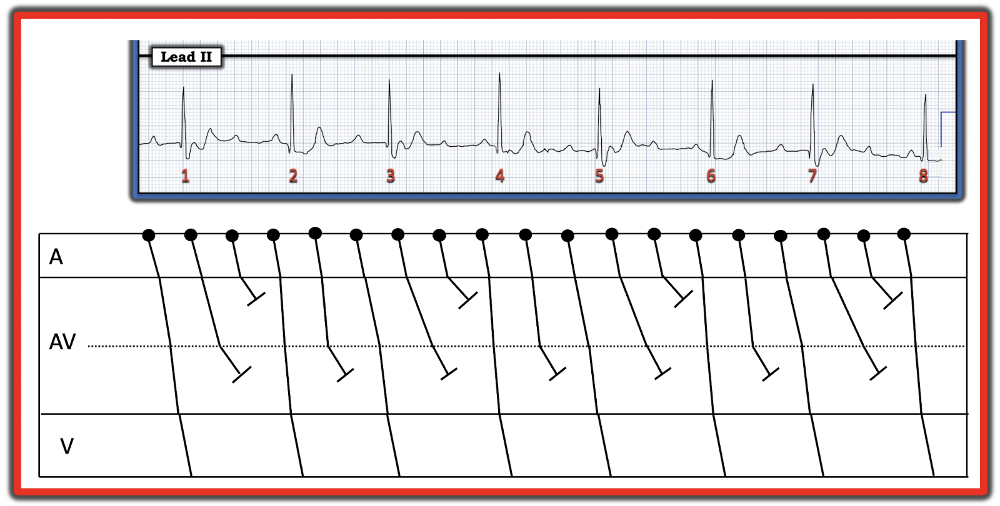
Suy nghĩ của tôi về bình luận của David Richley:
- Tôi đặc biệt thích bình luận của Dave — vì nó ủng hộ một điểm tôi thường nêu, đó là với nhiều loạn nhịp phức tạp, có thể có nhiều hơn một cách giải thích hợp lý. Giản đồ bậc thang thay thế mà Dave đề xuất ở Hình 16 chắc chắn là hợp lý.
- Tôi vẫn nghiêng về giản đồ bậc thang của mình — vì tôi không thấy dẫn truyền 5:4 ở tầng nút AV trên là "một cách giải thích đơn giản hơn". Tôi không thấy có vấn đề gì với tỷ lệ dẫn truyền luân phiên ở tầng Nút AV trên (vì cùng lý do mà tôi không thấy có vấn đề gì với dẫn truyền RBBB từng lúc tôi đã mô tả ở Hình 2, dường như là hệ quả của sự thay đổi luân phiên các khoảng R-R). Dù vậy — rất có thể giản đồ bậc thang của Dave đúng còn của tôi thì không (hoặc ngược lại).
- Trên thực tế (như Dave thừa nhận) — Ta không thể chứng minh giản đồ bậc thang nào chính xác hơn.
- Về lâm sàng — Cả hai chúng tôi đều đồng ý rằng có blốc AV độ 2 mức độ cao thuộc loại Mobitz I, đó là thông tin mấu chốt cần cho xử trí lâm sàng thích hợp.
- Về học thuật — Tôi thấy việc bàn luận về cơ chế loạn nhịp vừa hấp dẫn vừa sâu sắc — vì đi sâu vào những chi tiết này giúp tôi mài giũa khả năng đọc loạn nhịp phức tạp. Và Dave với tôi luôn học hỏi lẫn nhau trong những cuộc thảo luận này.
- ĐIỀU CỐT LÕI: Với những bạn đọc không quan tâm hoặc không thể dành thời gian cần thiết để bổ sung kỹ năng dựng giản đồ bậc thang vào "kho vũ khí" lâm sàng của mình — tôi vẫn hy vọng những bài Blog như bài hôm nay giúp bạn nhận ra việc hiểu các giản đồ bậc thang đã được vẽ sẵn DỄ DÀNG đến thế nào, và các giản đồ bậc thang như vậy hữu ích ra sao trong việc khẳng định rằng một chẩn đoán loạn nhịp có lẽ là đúng.
- Và với những bạn đọc có kỹ năng dựng giản đồ bậc thang — Hy vọng bạn thấy ca hôm nay thú vị và bổ ích như tôi đã thấy.